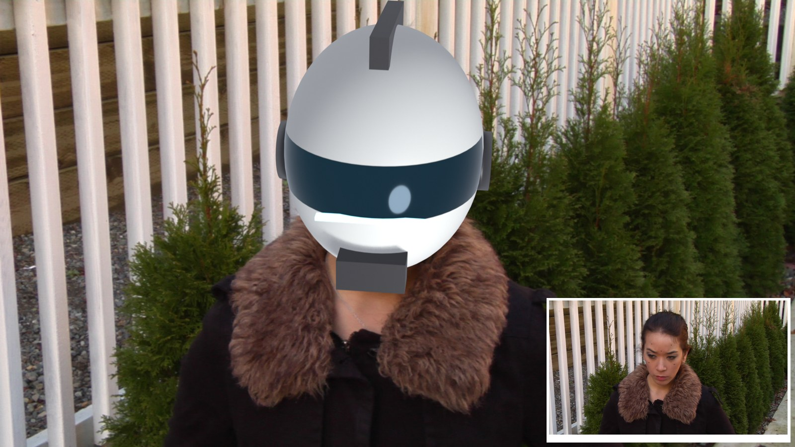
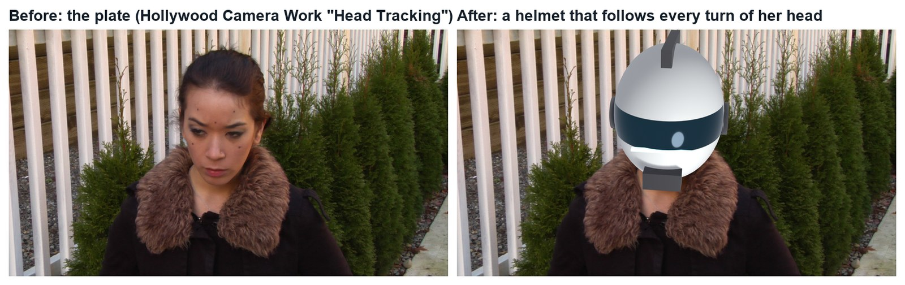
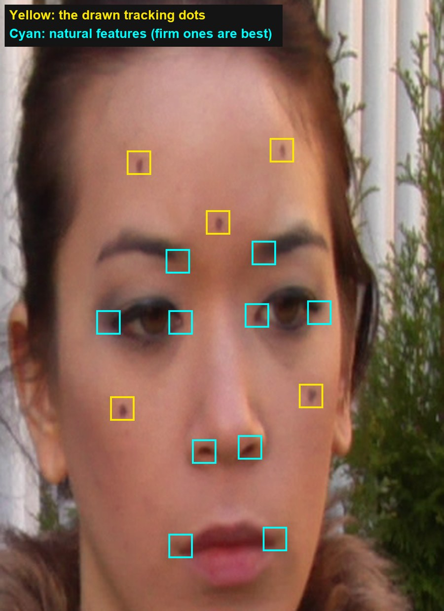
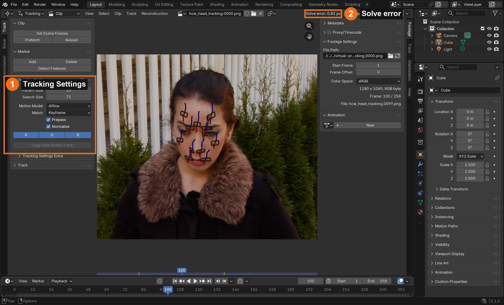
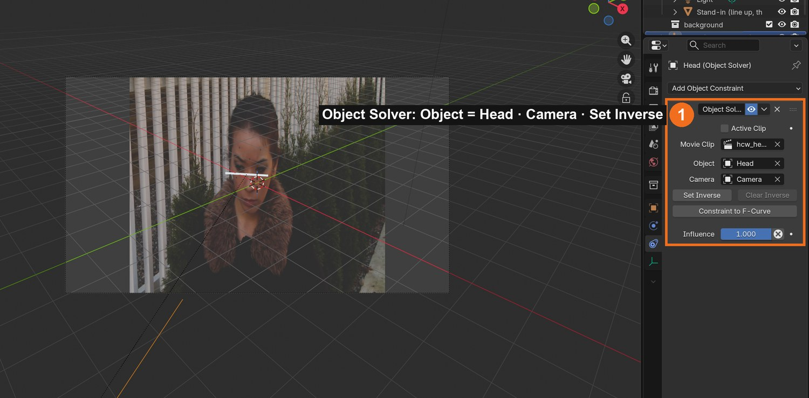
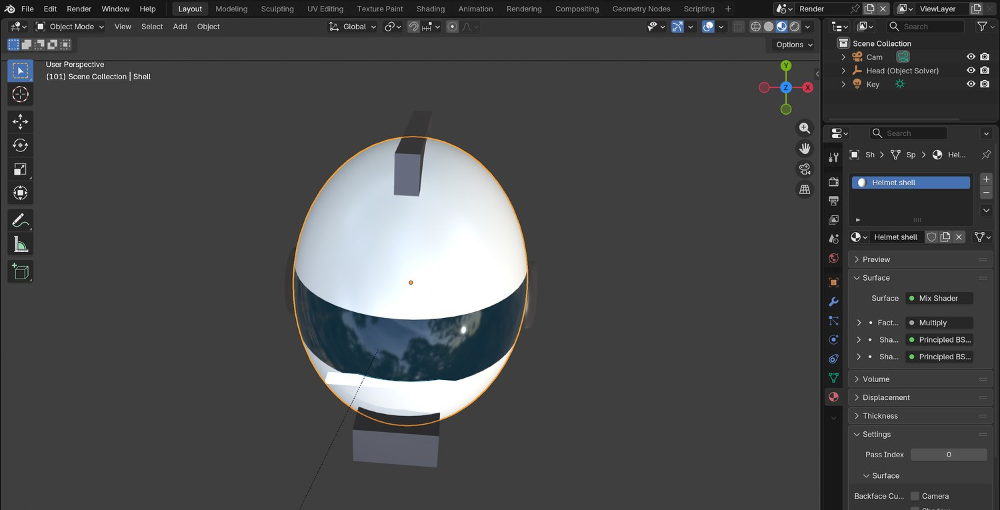
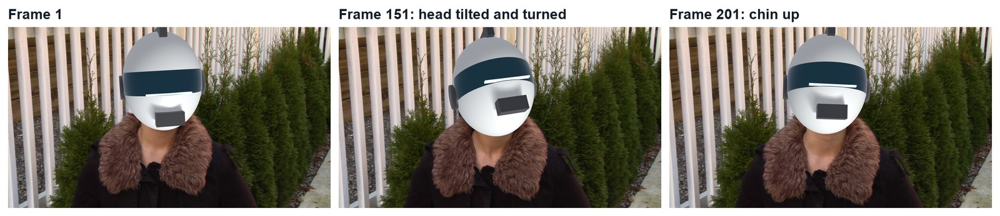
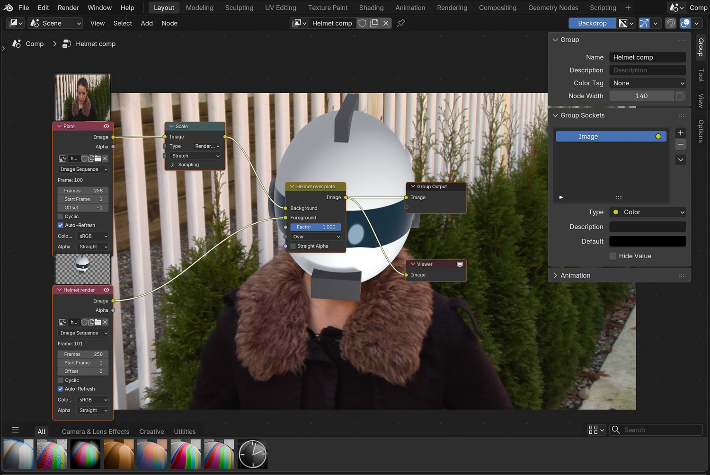

Track an actor’s face in 3D and put a helmet on her head that follows every turn: geometry tracking, the idea from Jacob Zirkle’s video.
6 illustrated stagesTwo lessonsFace markers · Object Solver · scale from the platePractice plate: Hollywood Camera Work

The demo shot, made in Blender with this tutorial’s steps. Plate: Hollywood Camera Work “Head Tracking”. The helmet is an original design.
Track. Fit. Wear.
Faces are harder than props: few markers, stretchy skin, shallow depth. Do Laser Sword first.
My supports
Turn on any help you want. Your teacher may have set some for you. They change how the guide helps, not what is assessed.
Shot brief
Put a helmet on her head.
The plate shows an actor turning her head, with a few tracking dots on her face. Deliver the same shot with a helmet that follows her head, and a change of the director’s choosing.
You will hand in
A solve under 1 px (screenshot of the solve error)
The finished shot as an MP4
The director’s change, with a three-sentence explanation
Credits for the plate and the method
Footage and credits
The plate is from Hollywood Camera Work. You may use it and post your results with credit, but do not re-upload the plate itself. The idea follows Jacob Zirkle’s video.
Replacing a tracked prop with CG is everyday VFX work: weapons, phones, creatures on sticks. A matchmove artist tracks the prop, a CG artist builds and lights the replacement, and a compositor removes the original and blends the new one in. You do all three here.
Knowledge first
Why this works.
A head is rigid; a face is not
Track points fixed to the skull (drawn dots, eye corners, nostrils). Skin that stretches breaks the solve.
Shallow shapes need every marker
Face points lie almost on one surface, so the solver has little depth to work with. Keep at least 10 good markers and choose keyframes with a real turn.
Scale from the plate
Measure something real in the footage (the distance between two dots) to set the size and depth of what you attach.
Design principles in the shot
Proportion: the helmet fits a real head. Unity: its light matches the plate. Emphasis: the visor is where the eye goes.
Primary achievement evidence: the director’s change (step 6). Guided steps and supports are recorded separately from achievement. Shot-library option in sprint mm12-26-s08. The registry has no VFX skill IDs yet; see the animation skills proposal.
Session A · Lesson 1 · VFX shot library
Track a face.
An actor turns and tilts her head. A few dots are drawn on her face. You will make Blender follow her head in 3D and put a helmet on it.
TODAYWatch and plan (15 min), markers on the face (25 min), track and solve (25 min).
01
Watch the idea and study the plate
IN SHORTWatch the demo and the video; download the plate; count the dots; choose firm features.
READ ALOUD
DOCUMENT: Jacob Zirkle’s video · the Head Tracking plate SELECT: A face with drawn tracking dots TOOLS / ROUTE: Watch · download · look closely
Play the demo shot (below), then watch Jacob Zirkle’s geometry-tracking video. His point: a tracked face gives you a 3D frame that any geometry can ride on.
He solves the face as a camera move and converts it with his add-on. Blender’s Object solver gives the same result directly, which is what you will use (the add-on is a fine alternative at home).
Download the Head Tracking plate from Hollywood Camera Work and unzip it into your project folder.
Scrub the frames. Count the drawn dots (five). You need at least 8 points, so you will add natural features.
Choose firm features: eye corners, nostrils, inner brows. Skin that stretches (cheeks when smiling, lips when talking) is a poor choice.
1 · Track the face
Markers on dots and firm features; Solve Object Motion.
2 · Fit the helmet
Scale it to a real head and parent it to the solve.
3 · Composite
Helmet over the plate; fix what gives it away.
The demo shot (real Blender render, 11 seconds). Plate: Hollywood Camera Work.

Real frames: the plate, and the same frame with the tracked helmet.
Geometry tracking: Making 3D geometry follow a tracked surface such as a face
Rigid: Something that keeps its shape while it moves

Frame 1 of the plate with the demo’s 15 markers: the five drawn dots (yellow) and ten natural features (cyan).
WHYA head is nearly rigid, but a face is not. Tracking only points that stay fixed to the skull makes the solver see one solid object.
CHECKThe plate in your project folder and a list of at least 8 firm points you will track.
FIXPlate won’t download at school? Ask your teacher for the class copy.
WORKED EXAMPLE · DIFFERENT OBJECTThe demo plate is 258 frames, 1280 × 1080 with pixel aspect 1.5.
STRETCH (AFTER THE CHECK PASSES)Sketch the helmet or mask you want to put on her.
Method basis: J1 · H1. Values and sequence are authored for this project.
02
Make a tracking object and mark the face
IN SHORTOpen plate; pixel aspect; Objects › + Head; Affine settings; markers on dots and features; Ctrl+T.
READ ALOUD
DOCUMENT: Helmet_YourName.blend · the plate SELECT: Movie Clip Editor, a tracking object called Head TOOLS / ROUTE: Motion Tracking workspace · Track › Objects › + · Ctrl+click
New file. Add the Motion Tracking workspace, open the first plate image, click Set Scene Frames and Prefetch. Set Pixel Aspect to 1.5.
Sidebar › Track › Objects: click + and rename the object Head. Keep it selected.
Tracking Settings: Pattern Size about 25, Search Size about 70, Motion Model Affine (skin patterns change shape as the head turns), Prepass and Normalize on.
On frame 1, Ctrl+click a marker on each drawn dot, then on each firm feature you chose. Aim for 12 or more.
Select all (A) and press Ctrl+T to track to the end. The head moves slowly, so most markers track in one go.
Click by click (real Blender screenshots)
Sidebar › Track › Objects (captured on the Laser Sword file): add and select your tracking object before placing markers.
STEP CHECKLIST
GLOSSARY
Affine: A motion model that allows a pattern to move, rotate, scale and skew
Tracking object: A named group of markers solved as one moving object

Real screenshot of the demo: the markers on her face in the Clip Editor, Tracking Settings (1) and the solve error (2).
WHYThe Affine motion model lets a marker’s pattern stretch and rotate, which a turning face needs. Location-only works for balls, not for skin.
CHECKA tracking object called Head with 12 or more markers tracked through the whole shot.
FIXA marker drifts across the skin? Delete it. A few solid markers beat many sliding ones.
WORKED EXAMPLE · DIFFERENT OBJECTThe demo placed 15 markers; 12 tracked all 258 frames.
STRETCH (AFTER THE CHECK PASSES)Track backward from the last frame to add markers that only appear late.
Method basis: B1 · J1. Values and sequence are authored for this project.
03
Solve the head motion to under 1 pixel
IN SHORTHead active; keyframes with a clear turn; solve; check worst tracks; keep at least 10; under 1 px.
READ ALOUD
DOCUMENT: Helmet_YourName.blend SELECT: Solve tab, with Head active TOOLS / ROUTE: Solve › Keyframe A / B · Solve Object Motion · Clean Up
With Head selected in Objects, open the Solve tab: the button reads Solve Object Motion.
Turn off automatic Keyframe selection. Choose Keyframe A and B where her head has clearly turned between them (the demo used 50 and 150).
Click Solve Object Motion and read the Solve error.
Above 1 px? Look at the worst tracks with Clean Up › Clean Tracks. If one is on stretchy skin, delete it and solve again.
Do not delete too many: the demo got worse (0.82 → 1.57 px) when one more track was removed, because too few were left.
Click by click (real Blender screenshots)
Solve tab › Clean Up: set Error, choose Select, and click Clean Tracks to see the worst tracks before deleting anything.
What went wrong when we built the demo: removing the single worst track made our solve worse, not better. With only 12 markers on a shallow face, each one matters.
STEP CHECKLIST
GLOSSARY
Solve error: Average tracking error in pixels; lower is better
The Solve panel with a tracking object active (captured on the Laser Sword file): keyframes A and B (2), Solve Object Motion (3).
WHYA face is shallow: its points are almost on one surface. The solver needs every good marker you have, and two keyframes with a real turn between them.
CHECKA solve error under 1.0 px with at least 10 markers remaining.
FIXError will not drop? Try a longer focal length under Track › Camera, and pick keyframes with a bigger head turn.
WORKED EXAMPLE · DIFFERENT OBJECTThe demo solved at 0.82 px with 12 tracks at 35 mm.
STRETCH (AFTER THE CHECK PASSES)Record the error for three focal lengths.
Method basis: B3. Values and sequence are authored for this project.
Session B · Lesson 2 · VFX shot library
Fit the helmet. Composite. Deliver the change.
Attach geometry to the solved head, get the size right, and finish the shot.
TODAYScene, constraint and helmet (30 min), light, render and composite (15 min), director’s change (20 min).
04
Set up the scene and attach geometry to the head
IN SHORTSetup Tracking Scene; Empty + Object Solver (Head); test bar; parent; play.
READ ALOUD
DOCUMENT: Helmet_YourName.blend SELECT: A camera, an Empty with an Object Solver constraint TOOLS / ROUTE: Scene Setup · Add › Empty · Object Constraints › Object Solver
Solve tab › Scene Setup: Set as Background, then Setup Tracking Scene. Delete the test cube and ground.
Add › Empty. In Object Constraint properties add Object Solver. Set Object to Head and Camera to the scene camera.
Add a small test object (a thin bar across her brow) and parent it to the Empty.
Play it in camera view. The bar should stay glued to her brow as she turns and tilts.
If it swims, return to the Clip Editor: a marker is sliding on skin.
Click by click (real Blender screenshots)
Solve tab › Scene Setup: Set as Background, then Setup Tracking Scene.
STEP CHECKLIST
GLOSSARY
Object Solver: The constraint that makes an object follow a solved tracking object

Real screenshot: the Object Solver constraint (Object = Head) and a small white test bar that follows her brow in camera view.
WHYThis is the “camera data to geometry” idea from the video: instead of a moving camera, an object in the scene now carries the head’s motion.
CHECKA test object that stays fixed to her face for the whole shot.
FIXTest bar flies away? Click Set Inverse on the constraint, then move the bar back to her brow.
WORKED EXAMPLE · DIFFERENT OBJECTThe demo’s test bar is 20 % of the face width.
STRETCH (AFTER THE CHECK PASSES)Parent a pair of 3D glasses to the Empty instead.
Method basis: B2 · J1. Values and sequence are authored for this project.
05
Build or import a helmet and fit it to a real head
IN SHORTModel or import; measure scale from the dots; centre behind the face; materials and light; transparent render.
READ ALOUD
DOCUMENT: Your helmet model (your own, or a licensed download) SELECT: The helmet, parented to the Empty TOOLS / ROUTE: Add › Mesh · S / G / R · materials · Sun light
Model a simple helmet (a UV sphere scaled to a head shape, with a visor band, a crest and ear caps) or import a licensed one.
Size it from the plate, not by eye. Measure: the cheek dots are about 8.6 cm apart on a head about 15.5 cm wide. The helmet shell is wider still.
Place the helmet’s centre behind the face (the skull centre is about 9 cm behind the brow) and a little above the marker cloud. Parent it to the Empty.
Give it materials: a glossy shell, a dark glass visor, an emission strip. Add a soft Sun from the plate’s light direction and a pale World.
Render properties: Film › Transparent, Motion Blur on. Render as a PNG RGBA sequence.
Click by click (real Blender screenshots)
Render properties (captured on the Laser Sword file): Motion Blur (1) and Film › Transparent (2).
What went wrong when we built the demo: our first helmet was the size of her face and floated in front of it. We had assumed the markers spanned her whole head; they span about half of it.
STEP CHECKLIST
GLOSSARY
Scale reference: A known real-world size used to set the size of everything else

Real screenshot: the demo helmet in Blender. One sphere scaled to a head shape, a visor made in the material, a crest, ear caps and a chin vent.
WHYMarkers sit on the face, but a helmet surrounds the skull. Getting the scale and the depth behind the face right is what makes it look worn, not stuck on.
CHECKA helmet that covers her whole head, turns with it, and is lit like the plate, rendered with a transparent background.
FIXHelmet looks like a mask on her face? It is too small and too far forward: scale it up and move it back.
WORKED EXAMPLE · DIFFERENT OBJECTThe demo shell is 21 × 25 × 26 cm, centred 9 cm behind and 2 cm above the marker centroid.
STRETCH (AFTER THE CHECK PASSES)Model a half-mask that leaves her mouth visible.
Method basis: J1. Values and sequence are authored for this project.
06
Composite, then the practical check: the director’s change
IN SHORTAlpha Over; check; read the card; change a copy; render; defend; credit.
READ ALOUD
DOCUMENT: Helmet_YourName.blend · Compositing · the director’s card SELECT: Helmet pass over the plate; then whatever the card requires TOOLS / ROUTE: Alpha Over · Viewer · your own decisions
Compositing workspace: plate into Alpha Over’s Background, helmet pass into Foreground. Check three frames with a Viewer.
Look for what gives it away: the fur collar should overlap the helmet’s lower edge, and the helmet’s brightness should match her coat and the fence.
Read your director’s card (below). Decide which stage it touches and change as little as possible, in a copy of your file.
Render the shot (FFmpeg, H.264), screen it, and explain one tracking choice and one fitting choice.
Credit the plate, the idea and any model you used.

Three real frames from the finished demo: the helmet follows turns and tilts.
Card
The director says
1 · Half-mask
“I need to see her mouth. Make it a mask that covers only the eyes.”
2 · Visor up
“The visor lifts at frame 120 and we see her eyes.”
3 · Villain
“Black helmet, red visor light.”
4 · Not a helmet
“Something else on her head entirely: horns, a crown, antennae. Your choice.”
Independent evidence: the main achievement evidence for this tutorial.
STEP CHECKLIST
GLOSSARY
Alpha Over: The node that places a foreground with transparency over a background

Real screenshot of the demo node tree: the plate, the helmet render, and one Alpha Over.
WHYA shot built in stages can be changed without starting again. Knowing which stage to open is the professional skill.
CHECKA finished shot that meets the card, with an explanation and credits.
FIXStuck? Name the stage the card touches first. (Independent step: the Coach can explain tools but not decide your changes.)
WORKED EXAMPLE · DIFFERENT OBJECTHonest note on the demo: the collar is behind the helmet where it should overlap it. Fixing that needs a roto mask of the fur.
STRETCH (AFTER THE CHECK PASSES)Roto the fur collar so it overlaps the helmet.
Method basis: K1 · J1. Values and sequence are authored for this project.
Before you submit
Student QA.
Evidence conversation
Keep it short and specific.
SENTENCE FRAMESMy solve error was ___ after I ___. · I sized the helmet by ___. · For the director’s card I changed the ___ stage using ___.
J1 Jacob Zirkle. I Made a Free Geometry Tracking Addon for Blender (YouTube). The idea this tutorial uses: tracked face → moving geometry. https://www.youtube.com/watch?v=vKtb1_K1J2k
Figures marked Illustration are drawn, not screenshots. Step values are starting points authored for this project. Draft for teacher review; not yet classroom-piloted.